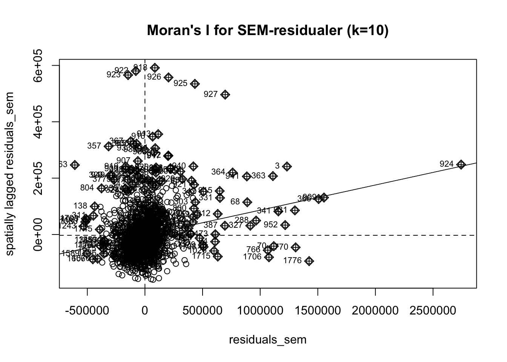

# Laste inn House Sales King County datasett
kc_house_data <- read_csv("MandD/kc_house_data.csv", show_col_types = FALSE)Romlig analyse av boligpriser i King County
2 Introduksjon
I denne oppgaven skal vi analysere boligmarkedet i King County i USA, med fokus på ulike faktorer som påvirker boligprisene. Først vil vi gjennomføre en Exploratory Data Analysis (EDA) i GeoDa for å undersøke romlig autokorrelasjon mellom pris og boareal, samt forsøke å kartlegge hvor ulike boligtyper er lokalisert. Videre i oppgaven vil vi estimere tre ulike hedoniske prismodeller for å undersøke hvordan både huskarkateristika og områdespesifikke variabler påvirker salgsprisene. Videre vil vi fastslå «spatial effects» og fortsette med «spatial regressions» for å forsøke å forstå hvordan geografiske forskjeller og nabolagskarakteristika bidrar til variasjoner i boligpriser. Vi skal bruke metodene til både Anselin (1988) og LeSage (u.å.) for å fastslå hvilken romlig regresjonsmodell som best fanger opp de romlige effektene.
3 Data
4 House Sales in King County, USA
Det første datasettet vi har brukt i oppgaven er House Sales in King County, USA fra Kaggle. Datasettet inneholder rundt 27 000 observasjoner med detaljerte variabler som beskriver ulike egenskaper ved de solgte boligene. I tillegg inneholder datasettet salgspris og geografiske koordinater for hver observasjon. Variablene gir en omfattende innsikt i både boligkarakteristika og salgsdetaljer for perioden 2014-2015. Vi la til en variabel som angir avstand i km til CBD i Seattle og endret kartprojeksjonen til EPSG 2926.
# Sorter salgene «descending» etter dato
# Velge siste salg der vi har multiple salg av samme eiendom
kc_house_data <- kc_house_data %>%
mutate(
year = year(date),
month = month(date),
day = day(date)
) %>%
arrange(desc(date)) %>%
distinct(id, .keep_all = TRUE)# Konvertere kc_house_data til et sf-objekt
# Projeksjon: EPSG:4326
kc_house_data <- kc_house_data %>%
st_as_sf(coords = c("long", "lat"), crs = 4326)# Projeksjon: EPSG:2926
kc_house_data <- st_transform(kc_house_data, crs = 2926)# Opprette punkt for CBD i Seattle
seattle_cbd <- st_point(c(-122.3321, 47.6062)) %>%
st_sfc(crs = 4326) %>%
st_transform(crs = 2926) # Projeksjon: EPSG:2926# Finn avstanden fra CBD til hvert hus
kc_house_data <- kc_house_data %>%
mutate(dist_cbd = set_units(st_distance(geometry, seattle_cbd), "km"))# Ordne rekkefølge på variabler
kc_house_data <- kc_house_data %>%
select(id, date, year, month, day, geometry, zipcode, price, dist_cbd, floors,
bedrooms, bathrooms, sqft_living, sqft_living15, sqft_lot, sqft_lot15,
sqft_above, sqft_basement, yr_built, yr_renovated, condition,
grade, view,waterfront )4.1 WADOH Environmental Health Disparities Index Calculated for King County
I datsettet House Sales in King County, USA fra Kaggle mangler det variabler som beskriver området hvor boligene ligger. Denne informasjonen henter vi fra datasettet WADOH Environmental Health Disparities Index calculated for King County, utarbeidet av Washington State Department of Health. Datasettet inneholder en EHD-indeks, og de variablene som denne indeksen er utarbeidet fra, for alle “cencus tracts” i King County. Vi endret også projeksjonen på dette kartet til EPSG 2926.
# Laste inn WADOH King County datasett
kc_wadoh_map <- st_read(
dsn = "MandD/WADOH_Environmental_Health_Disparities_Index_Calculated_for_King_County___wadohehdindex_area",
quiet = TRUE
)# Plukke ut variabler
kc_wadoh_map <- kc_wadoh_map %>%
select(
GEOIDTRT = GEO_ID_TRT,
EHD_percen,#Environmental Health Index, weighted score many vars
linguist_2,#Pop. age 5+ speaking English less than "very well"
poverty_pe,#Percentage people living in poverty
transporta,#% of income spent on transportation median family in tract
unemploy_2,#percentage unemployed
housing_pe,#% of households in group "Unaffordable Housing" (>30% inc.)
traffic_pe,#% of pop. near heavy traffic roadways
diesel,# nox consentration
ozone,# ozone consentration
PM25, # consentration of Particulate Matter in air
toxic_rele, # Toxic release from factories
hazardous_, # Hazardous Waste Treatment Storage and disposal Facilities
lead_perce, # measure of Lead paint in houses
superfund, # Proximity to contaminated sites on national list
facilities, # Proximity to Risk Management Plan Facilities
wastewater, # Proximity to wastewater facilities
sen_pop_pe, # % pop. over 65
socio_perc # score social economic determants, low best
)# Projeksjon: EPSG:2926
kc_wadoh_map <- st_transform(kc_wadoh_map, crs = 2926)4.2 Cencus shapefile og tracts10
Vi benyttet også flere datasett fra en cencus shapefil for King County, utarbeidet av King County GIS. Vi hentet data om samlet familie inntekt fra datafilen acs_b19101_familyincome.dbf og opplysninger om etnisitet fra datasettet acs_b02001_race.dbf. Disse to datasettene gir informasjon om familie inntekt og etnisitet på “cencus-tracts”-nivå. Vi brukte disse to datasettene til å lage variabler som vi la til i WADOH-datasettet. Fra cencus shapefilen lastet vi også ned kartet tracts10. Vi la variablene fra WADOH-datasettet in i tracts10. Videre gjorde vi en spatial join med hus-datene fra Kaggle for å binde områdevariablene til de respektive boligene. Vi benyttet projeksjonen EPSG 2926 for alle kartene.
# Laste inn datasett for inntekt
income <- read.dbf("MandD/acs_b19101_familyincome.dbf") %>%
# select(-M19101153, - M19101152, - M19101151, - M19101150,- M19101149, - M19101148, -
# M19101147,- M19101146, - M19101145, - M19101144,- M19101143, - M19101142, -
# M19101141, - M19101140, - M19101139, - M19101138, - M19101137
# )
# ag: sparer litt skriving
select(!starts_with("M"))# Gruppere inntekt: low, mid, high
income <- income %>%
mutate(
# Lag nye kolonner for inntektsgruppene med ønskede navn
low_income = E19101138 + # Less than $10,000
E19101139 + # $10,000 to $14,999
E19101140 + # $15,000 to $19,999
E19101141 + # $20,000 to $24,999
E19101142 + # $25,000 to $29,999
E19101143, # $30,000 to $34,999
mid_income = E19101144 + # $35,000 to $39,999
E19101145 + # $40,000 to $44,999
E19101146 + # $45,000 to $49,999
E19101147 + # $50,000 to $59,999
E19101148 + # $60,000 to $74,999
E19101149, # $75,000 to $99,999
high_income = E19101150 + # $100,000 to $124,999
E19101151 + # $125,000 to $149,999
E19101152 + # $150,000 to $199,999
E19101153 # $200,000 or more
) %>%
select(GEOID, GEOIDTRT, TRACTLABEL, low_income, mid_income, high_income)# Laste inn datasett for rase
race <- read.dbf("MandD/acs_b02001_race.dbf") %>%
# select(-M02001001, -M02001002, -M02001003, -M02001004, -M02001005, -M02001006,
# -M02001007, -M02001008, -M02001009, -M02001010
# )
select(!starts_with("M"))# Slå sammen rase variabler
race <- race %>%
mutate(
total = E02001001,
hvit_alene = E02001002,
svart_alene = E02001003,
asiatisk_alene = E02001005,
andre_alene = E02001004 + E02001006 + E02001007,
blandet = E02001008 + E02001009 + E02001010
) %>%
select(GEOID, GEOIDTRT, TRACTLABEL, total, hvit_alene, svart_alene, asiatisk_alene,
andre_alene, blandet)
# Beregne andeler for rase
race <- race %>%
mutate(
andel_hvit_alene = hvit_alene / total,
andel_svart_alene = svart_alene / total,
andel_asiatisk_alene = asiatisk_alene / total,
andel_andre_alene = andre_alene / total,
andel_blandet = blandet / total
) %>%
select(GEOID, GEOIDTRT, TRACTLABEL,
andel_hvit_alene, andel_svart_alene,
andel_asiatisk_alene, andel_andre_alene,
andel_blandet)# Legge inntekt variabler og rase variabler til i kc_wadoh_map
# income_race <- income %>%
# left_join(race, by = c("GEOID", "GEOIDTRT", "TRACTLABEL"))
#
# kc_wadoh_map <- kc_wadoh_map %>
# left_join(income_race, by = "GEOIDTRT")
# ag: eller kanskje litt mer lettvindt
kc_wadoh_map <- kc_wadoh_map |>
# ag: Dropper GEOID og TRACTLABEL fra race siden disse også er i income
left_join(select(race, -GEOID, -TRACTLABEL), by = join_by(GEOIDTRT)) |>
left_join(income, by = join_by(GEOIDTRT))# Laste inn tracts10 datasett
# tracts10 <- st_read("MandD/tracts10") %>%
# rename("GEOIDTRT" = "GEO_ID_TRT")
# ag: OK, men trengs ikke. Se bruk av den nye funksjonen join_by() nedenfor
tracts10 <- st_read("MandD/tracts10", quiet = TRUE) |>
left_join(st_drop_geometry(kc_wadoh_map), by = join_by(GEO_ID_TRT == GEOIDTRT))# Projeksjon: EPSG:2926
tracts10 <- st_transform(tracts10, crs = 2926)
kc_house_data <- st_transform(kc_house_data, crs = 2926)# Spatial join mellom husdata og tracts10
tracts10_join <- st_join(kc_house_data, tracts10)# Fjerner observasjoner med NA-verdier i områdevariablene
tracts10_join <- na.omit(tracts10_join)# Lag year_month som en faktor-variabel
tracts10_join <- tracts10_join %>%
mutate(year_month = as.factor(format(date, "%Y-%m")))# Lagre som .gpkg
st_write(tracts10_join, "house_data.gpkg", append=FALSE, quiet = TRUE)5 Exploratory Data Analysis (EDA)
Vi har gjennomført en Exploratory Data Analysis (EDA) av dataene i Geoda. Her har vi generert en vektfil ut fra 3 og 10 nærmeste naboer og brukt Bivariate Moran`s I til å undersøke romlig autokorrelasjon mellom pris og boareal (sqft_living). Vi har også brukt Bivariate Local Morans I for å finne ut hvor de små og dyre, store og dyre, billige og store, og de små og billige boligene ligger.
knitr::include_graphics("images/Skjermbilde 2024-11-05 kl. 11.11.56.png")
I Figur 1 ovenfor ser vi at Bivariate Moran’s I har en verdi på 0.406 for de 3 nærmeste naboene og en noe lavere verdi på 0.353 når vi utvidet til de 10 nærmeste naboene. Begge verdiene er positive, noe som indikerer en romlig autokorrelasjon mellom pris og boareal (sqft_living). Dette innebærer at boliger med høy pris har en tendens til å ligge nær andre boliger med høyt boareal, mens boliger med lav pris har en tendens til å ligge nær boliger med lavt boareal. At autokorrelasjonen avtar noe når vi utvider antall naboer, kan tyde på at sammenhengen mellom pris og boareal er sterkest lokalt. Dette antyder at relasjonen mellom pris og boareal er mer markant i nærområder, men svekkes over lengre avstander.

I Figur 2 har vi brukt Bivariate Local Morans I for å finne ut hvor de små og dyre, store og dyre, store og billige, og de små og billige boligene ligger. Dette illustreres ved hjelp av et LISA cluster map. Kartet til venstre viser fordelingen for 3 nærmeste naboer, mens kartet til høyre viser fordelingen for 10 nærmeste naboer. De to kartene er relativt like og vi kan se lignende mønster. Ut i fra disse kartene er det tydelig at for både 3 og 10 nærmeste naboer er store og dyre boliger er konsentrert nord i King County, det samme gjelder for små og dyre boliger. Dette reflekterer “hot spots” hvor dyre boliger samles. Det kommer også frem fra kartene at det er flere store og dyre boliger enn det er små og dyre boliger. Når det kommer til billige boliger, er disse mer jevnt fordelt enn de dyre. Sør i King County er det overvekt av billige boliger. Store og billige, samt små og billige boliger er utbredt i sør, noe som kan tyde på “cold spots” hvor fattige eller mindre attraktive nabolag er utbredt.
6 Hedoniske modeller
Hedoniske modeller brukes for å estimere boligpriser basert på spesifikke egenskaper som boligens størrelse, beliggenhet, nærhet til fasiliteter, samt miljømessige kvaliteter som luftkvalitet og støy. Ved å analysere hvordan disse faktorene påvirker salgspriser, kan vi finne den implisitte prisen av hver egenskap. Vi skal i dette kapittelet definere tre hedoniske modeller.
Den første modellen er en null modell med bare huskarakteristika og tids-dummier. Den andre modellen inkluderer huskarakteristika, distanse til CBD, relevante tract-variabler (transport og poverty) og tids-dummier. Den tredje modellen inkluderer huskarakteristika, distanse til CBD, EHD indeks og tids-dummier.
\[ \begin{aligned} P_i &= \beta_0 + \beta_1 \cdot \text{bedrooms}_i + \beta_2 \cdot \text{bathrooms}_i + \beta_3 \cdot \text{sqft\_living}_i + \beta_4 \cdot \text{sqft\_lot}_i \\ &+ \beta_5 \cdot \text{floors}_i + \beta_6 \cdot \text{year\_month}_i + \epsilon_i \end{aligned} \tag{1}\]
\[ \begin{aligned} P_i &= \beta_0 + \beta_1 \cdot \text{bedrooms}_i + \beta_2 \cdot \text{bathrooms}_i + \beta_3 \cdot \text{sqft\_living}_i + \beta_4 \cdot \text{sqft\_lot}_i \\ &+ \beta_5 \cdot \text{floors}_i + \beta_6 \cdot \text{distCBD}_i + \beta_7 \cdot \text{transport}_i + \beta_8 \cdot \text{poverty}_i \\ &+ \beta_{9j} \cdot \text{year\_month}_i + \epsilon_i \end{aligned} \tag{2}\]
\[ \begin{aligned} P_i &= \beta_0 + \beta_1 \cdot \text{bedrooms}_i + \beta_2 \cdot \text{bathrooms}_i + \beta_3 \cdot \text{sqft\_living}_i + \beta_4 \cdot \text{sqft\_lot}_i \\ &+ \beta_5 \cdot \text{floors}_i + \beta_6 \cdot \text{distCBD}_i + \beta_7 \cdot \text{EHDindex}_i \\ &+ \beta_8 \cdot \text{year\_month}_i + \epsilon_i \end{aligned} \tag{3}\]
ag: Ovenfor i uttrykkene Ligning 1, Ligning 2 og Ligning 3 er gjengitt de tre modellene vi vil bruke.
model1 <- lm(price ~ bedrooms + bathrooms + sqft_living + sqft_lot + floors + year_month, data = tracts10_join)model2 <- lm(price ~ bedrooms + bathrooms + sqft_living + sqft_lot + floors + dist_cbd[, 1] + transporta + poverty_pe + year_month, data = tracts10_join)model3 <- lm(price ~ bedrooms + bathrooms + sqft_living + sqft_lot + floors + dist_cbd[, 1] + EHD_percen + year_month, data = tracts10_join)6.1 Regresjonstabell
# ag: ingen grunn til å gjenta disse
# model1 <- lm(price ~ bedrooms + bathrooms + sqft_living + sqft_lot + floors + year_month, data = tracts10_join)
#
# model2 <- lm(price ~ bedrooms + bathrooms + sqft_living + sqft_lot + floors + dist_cbd[, 1] + transporta + poverty_pe + year_month, data = tracts10_join)
#
# model3 <- lm(price ~ bedrooms + bathrooms + sqft_living + sqft_lot + floors + dist_cbd[, 1] + EHD_percen + year_month, data = tracts10_join)
modelsummary(
list(
`Modell 1` = model1,
`Modell 2` = model2,
`Modell 3` = model3
),
statistic = "statistic",
stars = TRUE,
# noen rapporterer standard errors i parentes under
notes = "Tallene i parentes er t-verdier.",
output = "flextable"
) %>%
autofit() |>
width(j = 1, width = 2) |>
theme_booktabs() |>
line_spacing(space = 0.3, part = "body")
| Modell 1 | Modell 2 | Modell 3 |
|---|---|---|---|
(Intercept) | 79893.490*** | 845500.071*** | 405315.746*** |
(8.118) | (31.295) | (45.066) | |
bedrooms | -59606.355*** | -49195.378*** | -46342.134*** |
(-25.021) | (-24.540) | (-23.306) | |
bathrooms | 6795.037+ | 19338.314*** | 20288.528*** |
(1.762) | (5.961) | (6.316) | |
sqft_living | 315.571*** | 294.543*** | 288.133*** |
(99.650) | (108.515) | (108.069) | |
sqft_lot | -0.399*** | 0.428*** | 0.223*** |
(-8.770) | (10.824) | (5.704) | |
floors | -3785.107 | -22766.366*** | -18888.026*** |
(-0.992) | (-7.042) | (-5.948) | |
year_month2014-06 | 6015.759 | 10562.394 | 11027.366 |
(0.719) | (1.505) | (1.587) | |
year_month2014-07 | -7287.796 | 2932.383 | 3230.760 |
(-0.875) | (0.420) | (0.467) | |
year_month2014-08 | -2472.900 | 8832.195 | 7152.294 |
(-0.288) | (1.226) | (1.002) | |
year_month2014-09 | -7838.399 | 2520.796 | 1669.215 |
(-0.892) | (0.342) | (0.229) | |
year_month2014-10 | 643.829 | 7249.104 | 9102.974 |
(0.074) | (0.998) | (1.265) | |
year_month2014-11 | -7658.061 | -2033.165 | -178.541 |
(-0.822) | (-0.260) | (-0.023) | |
year_month2014-12 | -16854.808+ | -1382.891 | -127.009 |
(-1.833) | (-0.179) | (-0.017) | |
year_month2015-01 | -12714.538 | 3829.449 | 8256.888 |
(-1.222) | (0.439) | (0.955) | |
year_month2015-02 | -12149.568 | 10768.049 | 15466.226+ |
(-1.262) | (1.333) | (1.933) | |
year_month2015-03 | 24034.109** | 38092.481*** | 40551.732*** |
(2.783) | (5.258) | (5.650) | |
year_month2015-04 | 29222.396*** | 37461.977*** | 39250.975*** |
(3.522) | (5.381) | (5.692) | |
year_month2015-05 | 34683.499** | 48236.175*** | 51566.411*** |
(2.894) | (4.797) | (5.177) | |
dist_cbd[, 1] | -9749.342*** | -12277.122*** | |
(-44.666) | (-84.535) | ||
transporta | -23895.013*** | ||
(-17.986) | |||
poverty_pe | -7491.906*** | ||
(-40.361) | |||
EHD_percen | -2575.047*** | ||
(-46.591) | |||
Num.Obs. | 21200 | 21200 | 21200 |
R2 | 0.510 | 0.655 | 0.662 |
R2 Adj. | 0.510 | 0.655 | 0.661 |
AIC | 588488.8 | 581042.0 | 580636.9 |
BIC | 588640.0 | 581217.1 | 580804.1 |
Log.Lik. | -294225.378 | -290498.985 | -290297.438 |
F | 1297.057 | 2012.817 | 2180.926 |
RMSE | 257716.91 | 216175.05 | 214129.63 |
+ p < 0.1, * p < 0.05, ** p < 0.01, *** p < 0.001 | |||
Tallene i parentes er t-verdier. | |||
En regresjonstabell for de tre hedoniske modellene er gitt i Tabell 1 . I modell 1, som kun inkluderer huskarakteristika og tidsdummier, er antall soverom negativt assosiert med boligprisene (-59,606.36), boliger med flere soverom har lavere priser. Antall bad har en positiv effekt (6,795.04), og større boareal øker prisen (315.57). Tomtestørrelse har en negativ effekt på -0.399, mens antall etasjer ikke har en signifikant innvirkning på prisene. T-verdiene for huskarakteristikaene er alle høye, noe som indikerer at disse er signifikante, mens antall etasjer ikke er signifikant (t-verdi er lav). Når det gjelder tidsdummier, viser resultatene at prisene varierer betydelig fra måned til måned, med noen måneder som har positive effekter på prisen, mens andre har en negativ effekt. Mai 2014 er referansemåneden, noe som betyr at alle de andre dummykoeffisientene i modellen viser prisforskjellen sammenlignet med mai 2014. Det er få av tidsdummiene som er signifikante, noe som gjelder for alle modellene.
Modell 2 som inkluderer distanse til CBD, transport og fattigdom, viser at boliger lengre unna sentrum har lavere priser (-9,749.34), mens dårligere transport og høyere fattigdom reduserer boligprisene (-23,895.01 og -7,491.91). T-verdiene for disse variablene er høye, noe som betyr at de har en signifikant innvirkning på boligprisene. Resultatene viser også at flere soverom (-49,195.38) reduserer prisen, mens flere bad (19,338.31) og større boareal (294.54) øker prisen. Større tomt (0.43) har også en positiv effekt, men med mindre innvirkning enn boareal. Flere etasjer (-22,766.37) ser ut til å redusere prisen. Alle koeffisientene for huskrakteristika har høy T-verdi. Tidsdummiene for 2015 viser igjen variasjon i boligprisene.
Modell 3 som inkluderer EHD-indeksen, viser at dårligere miljøforhold er assosiert med lavere boligpriser (-2,575.05). T-verdien for miljøindeksen er relativt høy, som indikerer at den er signifikant. De andre koeffisientene for huskarakteristika, som soverom, bad, boareal, og tomtestørrelse, er stort sett konsistente med de tidligere modellene, og har signifikante t-verdier.. Tidsdummiene i modell 3 viser også variasjon i boligprisene gjennom året, med noen måneder som har en positiv effekt på prisene, mens andre måneder har en negativ effekt på prisene.
7 Sammenligning av de tre modellene - Hvilken er best?
7.1 R² og justert R²
Modell 1 har den laveste R² og justert R², noe som tyder på at den forklarer minst av variasjonen i dataene. Modell 2 har en betydelig høyere R²og justert R² enn modell 1, noe som indikerer en bedre forklaringsevne. Modell 3 har den høyeste R² og justert R², som tyder på at den gir den beste forklaringen av boligprisene blant de tre modellene. Basert på R² og justert R² ser Modell 3 ut til å være den mest pålitelige av de tre, da den forklarer mest av variasjonen i boligprisene.
7.2 AIC og BIC
Model 1 har en AIC-verdi på 588488.8, mens model 2 har en AIC-verdi på 581042.0. Model 3 har den laveste AIC-verdien på 580636.9. Lavere AIC-verdi betyr at model 3 er å foretrekke over model 1 og model 2, siden den gir en bedre balanse mellom tilpasning og kompleksitet.
Model1 har en BIC-verdi på 588640.0, model 2 har en BIC-verdi på 581217.1, og model 3 har den laveste BIC-verdien på 580804.1.BIC-verdi følger samme prinsipp som AIC: lavere verdier er bedre. Også her har model 3 den laveste verdien, noe som indikerer at model 3 er den beste modellen av de tre når man også tar hensyn til modellens kompleksitet.
7.3 Log-likelihood
Log-likelihood er en måling av modellens sannsynlighet; høyere log-likelihood er bedre. Modell 3 har høyest log-likelihood med en verdi på -290297.438, som betyr at den gir best tilpasning til dataene sammenlignet med de andre modellene.
7.4 F-verdi
F-verdien indikerer hvor godt modellen samlet sett forklarer variasjonen i boligprisene. Fra tabellen ser vi at F-verdien øker fra modell 1 (1297.057) til modell 3 (2180.926), noe som tyder på at den siste modellen har er best. Denne økningen i F-verdien fra modell 1 til modell 3 indikerer at når vi inkluderer flere variabler forbedres modellens forklaringskraft betraktelig.
7.5 RMSE
RMSE (Root Mean Squared Error) viser gjennomsnittlig avvik mellom de faktiske og de predikerte boligprisene. Den faller fra modell 1 (257716.91) til modell 3 (214129.63), noe som betyr at Modell 3 gir de mest presise prediksjonene og har lavest feilmargin.
7.6 Konklusjon
Modell 3 ser ut til å være den mest pålitelige og presise modellen. Modell 3 har den høyeste R² og justert R², noe som indikerer at den forklarer mest av variasjonen i prisene. I tillegg har modell 3 de laveste AIC- og BIC-verdiene, som viser at modellen gir en god balanse mellom kompleksitet og tilpasning. Med høyest log-likelihood og en betydelig forbedret F-verdi, er modell 3 også bedre tilpasset dataene enn de andre modellene. Modell 3 har også den laveste RMSE-verdien, noe som tyder på at den gir de mest presise prediksjonene med minst avvik fra de faktiske boligprisene.
8 Residualanalyse
Videre utføres en residual- og diagostikkanalyse for å vurdere modellens egenskaper ytterligere. Vi skal se nærmere på de fire plottene; “Residuals vs Fitted”, “Q-Q Residuals”, “Scale-Location” og “Residuals vs Leverage” for de tre hedoniske modellene. Figur 3 presenterer de fire plottene for modell 1, mens Figur 4 viser de samme plottene for modell 2, og til slutt gir Figur 5 en presentasjon av de fire plottene for modell 3.
# Plot 1 (Model 1)
par(mfrow = c(2, 2)) # For å vise alle fire plott i én visning
plot(model1) 
# Plot 2 (Modell 2)
par(mfrow = c(2, 2)) # For å vise alle fire plott i én visning
plot(model2) 
# Plot 3 (Modell 3)
par(mfrow = c(2, 2)) # For å vise alle fire plott i én visning
plot(model3) 
8.1 Residuals vs Fitted
Dette plottet viser forholdet mellom residualene og de tilpassede verdiene. Et godt tilpasset lineært forhold skal vise en tilfeldig fordeling av punktene rundt null-linjen, uten tydelige mønstre. I alle modellene ser vi litt avvik fra en helt jevn fordeling. For noen av modellene, spesielt modell 1, kan vi se noen mønstre som tyder på at modellen ikke helt fanger opp alle aspekter av dataene. Modell 3 ser ut til å ha en jevnere fordeling enn de andre modellene, noe som indikerer at denne modellen kan ha en bedre tilpasning. Samtidig ser vi tegn på heteroskedastisitet i form av en svak spredning i residualene for alle modellene. Dette antyder at variansen i feilene ikke er konstant, noe som kan påvirke modellenes presisjon og innebærer at estimatene ikke er like pålitelige over hele verdiskalaen.
8.2 Q-Q Residuals
Q-Q-plottet viser om residualene er normalfordelte ved å plotte de standardiserte residualene mot de teoretiske kvantilene for en normalfordeling. I alle modellene ser vi at noen punkter, spesielt i ytterkantene, avviker betydelig fra den teoretiske linjen. Dette indikerer at det er enkelte avvik eller “outliers” som ikke følger normalfordelingen. Modell 3 ser ut til å ha litt færre avvik enn de andre modellene, men det er fortsatt tegn på at noen residualer ikke er helt normalfordelte.
8.3 Scale-Location
Dette plottet viser kvadratroten av de standardiserte residualene mot de tilpassede verdiene. En jevn fordeling av punktene langs null-linjen indikerer homoskedastisitet . I alle modellene ser vi en svak trend der variansen øker med de tilpassede verdiene, noe som indikerer at det kan være heteroskedastisitet. Modell 3 ser igjen litt bedre ut enn modell 1 og modell 2, men heteroskedastisitet kan fortsatt være et problem noe som potensielt kan redusere modellenes robusthet og nøyaktighet i prediksjonene.
8.4 Residuals vs Leverage
Dette plottet viser hvilke observasjoner som har stor innflytelse på modellen og hvor store residualene er for disse observasjonene. Punkter som ligger langt fra de fleste dataene, og spesielt de som har høy leverage, kan være “influential points” som påvirker modellen betydelig. I alle modellene ser vi noen observasjoner med høy leverage, spesielt i ytterkantene. Cook’s distance-linjene hjelper oss å identifisere punkter med stor påvirkning. For eksempel ser vi noen observasjoner som kan påvirke modellens resultater betydelig. Modell 3 ser ut til å ha færre punkter med høy leverage enn de andre modellene, noe som kan indikere en bedre robusthet mot ekstreme observasjoner.
8.5 Konklusjon
Samlet sett gir modell 3 den beste tilpasningen blant de tre, men det er fortsatt noen utfordringer. Den har en jevnere fordeling i Residuals vs Fitted-plottet og færre punkter med høy leverage sammenlignet med de andre modellene, noe som indikerer bedre tilpasning. Men heteroskedastisitet og manglende normalitet i residualene utfordrer fortsatt modellens nøyaktighet og pålitelighet, noe som tyder på at det kan være rom for videre forbedring.
9 Simultan test på tids-dummiene
Videre skal vi bruke en simultan test på tids-dummiene i hver av de hedoniske modellene for å avgjøre om vi trenger de.
9.1 Model 1
Tabell 2 viser resultatene fra en simultantest på tids-dummiene i modell 1.
F-verdi: 5.717
p-verdi: 6.082e-10 (som er ekstremt lav, mindre enn 0.001)
For Model 1 indikerer den lave p-verdien (p < 0.001) at vi kan avvise nullhypotesen om at alle tids-dummiene samlet er lik null. Dette betyr at tids-dummiene har en signifikant effekt på modellens forklaringskraft, og de bør inkluderes i modellen.
test_mod1 <- linearHypothesis(model1, matchCoefs(model1, "year_month"), white.adjust = "hc3")
test_mod1_table <- as.data.frame(test_mod1)
table_data1 <- data.frame(
Model = c("Restricted Model", "Model 1"),
`Res.Df` = c(21194, 21182),
Df = c(NA, 12),
F = c(NA, 5.717),
`Pr(>F)` = c(NA, 6.082e-10),
Significance = c(NA, "***")
)
table_data1 %>%
flextable() %>%
set_header_labels(
Model = "Model Description",
`Res.Df` = "Res. Df",
Df = "Df",
F = "F-Statistic",
`Pr(>F)` = "P-Value",
Significance = "Significance"
) |>
colformat_double(digits = 3)Model Description | Res. Df | Df | F-Statistic | Pr..F. | Significance |
|---|---|---|---|---|---|
Restricted Model | 21,194.000 | ||||
Model 1 | 21,182.000 | 12.000 | 5.717 | 0.000 | *** |
9.2 Modell 2
Tabell 3 viser resultatene fra en simultantest på tids-dummiene i modell 2.
F-verdi: 8.2016
p-verdi: 1.245e-15 (også ekstremt lav)
I Model 2 er p-verdien også svært lav, noe som igjen betyr at vi kan avvise nullhypotesen. Tids-dummiene har en signifikant effekt på boligprisene i denne modellen og bør beholdes.
test_mod2 <- linearHypothesis(model2, matchCoefs(model2, "year_month"), white.adjust = "hc3")
test_mod2_table <- as.data.frame(test_mod2)
table_data2 <- data.frame(
Model = c("Restricted Model", "Model 2"),
`Res.Df` = c(21191, 21179),
Df = c(NA, 12),
F = c(NA, 8.2016),
`Pr(>F)` = c(NA, 1.245e-15),
Significance = c(NA, "***")
)
table_data2 %>%
flextable() %>%
set_header_labels(
Model = "Model Description",
`Res.Df` = "Res. Df",
Df = "Df",
F = "F-Statistic",
`Pr(>F)` = "P-Value",
Significance = "Significance"
) |>
colformat_double(digits = 3)Model Description | Res. Df | Df | F-Statistic | Pr..F. | Significance |
|---|---|---|---|---|---|
Restricted Model | 21,191.000 | ||||
Model 2 | 21,179.000 | 12.000 | 8.202 | 0.000 | *** |
9.3 Modell 3
Tabell 4 viser resultatene fra en simultantest på tids-dummiene i modell 3.
F-verdi: 9.1943
p-verdi: < 2.2e-16 (enda lavere enn de to foregående modellene)
For Model 3 er resultatet det samme: den lave p-verdien indikerer at tids-dummiene er signifikante for å forklare variasjonen i boligprisene, og derfor bør tids-dummiene inkluderes i modellen.
test_mod3 <- linearHypothesis(model3, matchCoefs(model3, "year_month"), white.adjust = "hc3")
test_mod3_table <- as.data.frame(test_mod3)
table_data3 <- data.frame(
Model = c("Restricted Model", "Model 3"),
`Res.Df` = c(21192, 21180),
Df = c(NA, 12),
F = c(NA, 9.1943),
`Pr(>F)` = c(NA, 2.2e-16),
Significance = c(NA, "***")
)
table_data3 %>%
flextable() %>%
set_header_labels(
Model = "Model Description",
`Res.Df` = "Res. Df",
Df = "Df",
F = "F-Statistic",
`Pr(>F)` = "P-Value",
Significance = "Significance"
) |>
colformat_double(digits = 3)Model Description | Res. Df | Df | F-Statistic | Pr..F. | Significance |
|---|---|---|---|---|---|
Restricted Model | 21,192.000 | ||||
Model 3 | 21,180.000 | 12.000 | 9.194 | 0.000 | *** |
For alle tre modellene er p-verdiene ekstremt lave, langt under 0.05, noe som indikerer at tids-dummiene samlet sett har en signifikant effekt på modellene. Med andre ord, tids-dummiene bør inkluderes i alle modellene fordi de bidrar til å forklare variasjonen i boligprisene over tid. Dette betyr at tidsvariasjon er viktig for å modellere boligprisene i dette datasettet.
10 Spatial Regressions
Videre skal vi utføre «spatial regressions» på et subset på ca. 2000 observasjoner fra det totale datasettet. Vi skal finne ut hvilken romlig regresjonsmodell som best fanger opp de romlige effektene. Vi skal se på valg av modell ved hjelp av metodene til både Anselin (1988) og LeSage (u.å.)
data <- st_read("MandD/kc_house_data_4242.gpkg")Reading layer `kc_house_data_4242' from data source
`/Users/ag/Dev/innleveringer_h24/msb205/innleveringer/msb205arb_HIJ/MandD/kc_house_data_4242.gpkg'
using driver `GPKG'
Simple feature collection with 1887 features and 51 fields
Geometry type: POINT
Dimension: XY
Bounding box: xmin: 1228997 ymin: 61256.69 xmax: 1500194 ymax: 287483.2
Projected CRS: NAD83(HARN) / Washington North (ftUS)# Legger til områdevariabler fra 'tracts10'
tracts10_selected <- tracts10 %>% select(andel_hvit_alene, andel_svart_alene, andel_asiatisk_alene, andel_andre_alene, andel_blandet)
# Slår sammen 'data' med områdevariablene fra 'tracts10'
data_with_area_vars <- st_join(data, tracts10_selected, join = st_intersects)11 OLS-modell og “Spatial effects”
Før vi går over på romlige regresjonsmodeller skal vi presentere modellen vi ønsker å bruke. Vi kjører den som en OLS-modell og ser nærmere på residualene for å avgjøre om vi har uforklarte “spatial effects” i residualene. Dette gjøres ved hjelp av Moran`s I tester. Modellen er spesifisert i Ligning 4.
\[ \begin{aligned} P_i &= \beta_0 + \beta_1 \cdot \text{bedrooms}_i + \beta_2 \cdot \text{bathrooms}_i + \beta_3 \cdot \text{sqft\_living}_i + \beta_4 \cdot \text{sqft\_lot}_i\\ &+ \beta_5 \cdot \text{floors}_i + \beta_6 \cdot \text{andel\_hvit\_alene}_i + \beta_7 \cdot \text{andel\_svart\_alene}_i\\ &+ \beta_8 \cdot \text{andel\_asiatisk\_alene}_i + \beta_9 \cdot \text{andel\_andre\_alene}_i + \beta_{10} \cdot \text{andel\_blandet}_i + \epsilon_i \end{aligned} \tag{4}\]
# Kjøre en lineær modell (OLS) med områdevariabler
model_ols <- lm(price ~ bedrooms + bathrooms + sqft_living + sqft_lot + floors +
andel_hvit_alene + andel_svart_alene + andel_asiatisk_alene +
andel_andre_alene + andel_blandet, data = data_with_area_vars)# Beregn residualene fra modellen
residuals_ols <- residuals(model_ols)# Vektmatriser for k = 3 og k = 10 nærmeste naboer
coords <- st_coordinates(data_with_area_vars)
knn3 <- knearneigh(coords, k = 3)
knn10 <- knearneigh(coords, k = 10)
nb3 <- knn2nb(knn3)Warning in knn2nb(knn3): neighbour object has 26 sub-graphsnb10 <- knn2nb(knn10)
lw3 <- nb2listw(nb3, style = "W")
lw10 <- nb2listw(nb10, style = "W")# Utfør Moran's I-test
moran_test_ols_k3 <- lm.morantest(model_ols, lw3)
print(moran_test_ols_k3)
Global Moran I for regression residuals
data:
model: lm(formula = price ~ bedrooms + bathrooms + sqft_living +
sqft_lot + floors + andel_hvit_alene + andel_svart_alene +
andel_asiatisk_alene + andel_andre_alene + andel_blandet, data =
data_with_area_vars)
weights: lw3
Moran I statistic standard deviate = 25.384, p-value < 2.2e-16
alternative hypothesis: greater
sample estimates:
Observed Moran I Expectation Variance
0.4421560581 -0.0025985312 0.0003069769 # Utfør Moran's I-test
moran_test_ols_k10 <- lm.morantest(model_ols, lw10)
print(moran_test_ols_k10)
Global Moran I for regression residuals
data:
model: lm(formula = price ~ bedrooms + bathrooms + sqft_living +
sqft_lot + floors + andel_hvit_alene + andel_svart_alene +
andel_asiatisk_alene + andel_andre_alene + andel_blandet, data =
data_with_area_vars)
weights: lw10
Moran I statistic standard deviate = 40.616, p-value < 2.2e-16
alternative hypothesis: greater
sample estimates:
Observed Moran I Expectation Variance
0.3904096022 -0.0020984966 0.0000933904 Tabell 5 presenterer resultatene fra Moran`s I testen for 3 nærmeste naboer, mens Tabell 6 viser resultatene fra Moran’s I-testen for 10 nærmeste naboer. Funnene indikerer at det er en signifikant romlig autokorrelasjon i residualene for både 3 og 10 nærmeste naboer. For Moran’s I med 3 naboer fikk vi en observert Moran I-verdi på 0.442 med ett standardavvik på 25.384 og en p-verdi på mindre enn 2.2e-16. For Moran’s I med 10 naboer var den observerte Moran I-verdien 0.390 med ett standardavvik på 40.616 og en p-verdi på mindre enn 2.2e-16. Begge testene gir svært lave p-verdier, noe som betyr at vi kan forkaste nullhypotesen om ingen romlig autokorrelasjon i residualene. Moran’s I-verdiene for både 3 og 10 naboer er positive og signifikante, noe som indikerer at residualene fra modellen er spatialt korrelerte. Dette betyr at det er spatial avhengighet som modellen ikke har klart å fange opp. Den romlige korrelasjonen er noe sterkere for nærmeste 3 naboer sammenlignet med nærmeste 10 naboer, noe som tyder på at den romlige korrelasjonen kan være mer lokal i naturen.
# Visualiser Moran Plot for OLS-residualene
moran.plot(residuals_ols, listw = lw3, main = "Moran Plot for OLS Residualer (k = 3)")
moran.plot(residuals_ols, listw = lw10, main = "Moran Plot for OLS Residualer (k = 10)")
Moran-plottene for OLS-residualene presentert i Figur 6 og Figur 7 gir en visuell representasjon av romlig autokorrelasjon i modellens residualer. Moran-plottene viser forholdet mellom residualene (x-aksen) og de spatialt forsinkede residualene (y-aksen), og gjør det mulig å vurdere om det finnes systematiske romlige mønstre. Moran-plottet for 3 nærmeste naboer indikerer en positiv romlig autokorrelasjon. Vi kan se at flere datapunkter ligger i kvadrantene som representerer lav-lav og høy-høy, noe som betyr at områder med høye restverdier tenderer til å være nær andre områder med høye restverdier, og tilsvarende for lave verdier. Den stigende trenden i plottet bekrefter også at det er en klar sammenheng mellom restverdiene og deres spatialt forsinkede motparter. Moran-plottet for 10 nærmeste naboer har en lignende trend som for 3 nærmeste naboer, men sammenhengen ser noe svakere ut. Dette skyldes sannsynligvis at k = 10 inkluderer flere naboer, noe som utjevner den lokale romlige korrelasjonen. Den stigende linjen indikerer fortsatt at det er en positiv romlig autokorrelasjon, men denne effekten blir noe mindre markant når flere naboer inkluderes.
Funnene fra Morans I testene og plottene indikerer at OLS-modellen ikke er tilstrekkelig i å fange opp alle de romlige forholdene som påvirker boligprisene. For å håndtere denne romlige autokorrelasjonen bør det vurderes å bruke romlige regresjonsmodeller, noe vi skal ser nærmere på videre i oppgaven.
12 Anselin
Her blir Anselin (1988) sin teknikk med Lagrange multiplikator test brukt og videre diskuteres det hvilken modell (SAR, SEM eller lm (OLS)) som synes å være den beste. Vi undersøker både for 3 og 10 nærmeste naboer.
12.1 Langrange multiplikator test for 3 nærmeste naboer
Tabell 7 gir en oversikt over lagrange multiplikator testen for 3 nærmeste naboer (k=3).
# Lagrange Multiplikator tester med k = 3
lm_tests3 <- lm.LMtests(model_ols, lw3, test = "all")
print(lm_tests3)
Rao's score (a.k.a Lagrange multiplier) diagnostics for spatial
dependence
data:
model: lm(formula = price ~ bedrooms + bathrooms + sqft_living +
sqft_lot + floors + andel_hvit_alene + andel_svart_alene +
andel_asiatisk_alene + andel_andre_alene + andel_blandet, data =
data_with_area_vars)
test weights: listw
RSerr = 632.79, df = 1, p-value < 2.2e-16
Rao's score (a.k.a Lagrange multiplier) diagnostics for spatial
dependence
data:
model: lm(formula = price ~ bedrooms + bathrooms + sqft_living +
sqft_lot + floors + andel_hvit_alene + andel_svart_alene +
andel_asiatisk_alene + andel_andre_alene + andel_blandet, data =
data_with_area_vars)
test weights: listw
RSlag = 597.42, df = 1, p-value < 2.2e-16
Rao's score (a.k.a Lagrange multiplier) diagnostics for spatial
dependence
data:
model: lm(formula = price ~ bedrooms + bathrooms + sqft_living +
sqft_lot + floors + andel_hvit_alene + andel_svart_alene +
andel_asiatisk_alene + andel_andre_alene + andel_blandet, data =
data_with_area_vars)
test weights: listw
adjRSerr = 99.077, df = 1, p-value < 2.2e-16
Rao's score (a.k.a Lagrange multiplier) diagnostics for spatial
dependence
data:
model: lm(formula = price ~ bedrooms + bathrooms + sqft_living +
sqft_lot + floors + andel_hvit_alene + andel_svart_alene +
andel_asiatisk_alene + andel_andre_alene + andel_blandet, data =
data_with_area_vars)
test weights: listw
adjRSlag = 63.709, df = 1, p-value = 1.443e-15
Rao's score (a.k.a Lagrange multiplier) diagnostics for spatial
dependence
data:
model: lm(formula = price ~ bedrooms + bathrooms + sqft_living +
sqft_lot + floors + andel_hvit_alene + andel_svart_alene +
andel_asiatisk_alene + andel_andre_alene + andel_blandet, data =
data_with_area_vars)
test weights: listw
SARMA = 696.5, df = 2, p-value < 2.2e-16OLS-modellen: Basert på de svært signifikante p-verdiene fra alle testene, kan vi konkludere med at OLS-modellen ikke klarer å håndtere romlige avhengigheter i dataene på en tilfredsstillende måte. Residualene fra OLS-modellen viser klare tegn på romlig autokorrelasjon, og dette betyr at en modell som tar hensyn til disse effektene vil være mer hensiktsmessig.
Spatial Error Model (SEM): Teststatistikken for RSerr og adjRSerr er høy, og begge testene er svært signifikante. Dette tyder på at romlig avhengighet primært eksisterer i errorleddene, noe som gjør SEM til en god kandidat for videre modellering.
Spatial Lag Model (SAR): Teststatistikken for RSlag og adjRSlag er også høy og signifikant, noe som indikerer at romlig avhengighet også finnes i selve avhengighetsforholdene i modellen. SAR-modellen vil derfor kunne være en god modell for å fange opp disse effektene.
Gitt resultatene fra Lagrange multiplikator-testene, synes både SEM og SAR å være aktuelle modeller for å håndtere de romlige avhengighetene. Valget mellom de to modellene avhenger av hvilken type romlig avhengighet som antas å være mest relevant:
- Hvis romlig avhengighet antas å påvirke feilleddene, er SEM den beste modellen.
- Hvis romlig avhengighet antas å være i den avhengige variabelens forhold til de forklarende variablene, vil SAR være mer hensiktsmessig.
12.2 Langrange multiplikator test for 10 nærmeste naboer
Tabell 8 gir en oversikt over resultatene fra langrange multiplikator test for 10 nærmeste naboer (k=10).
# Lagrange Multiplikator tester med k = 10
lm_tests10 <- lm.LMtests(model_ols, lw10, test = "all")
print(lm_tests10)
Rao's score (a.k.a Lagrange multiplier) diagnostics for spatial
dependence
data:
model: lm(formula = price ~ bedrooms + bathrooms + sqft_living +
sqft_lot + floors + andel_hvit_alene + andel_svart_alene +
andel_asiatisk_alene + andel_andre_alene + andel_blandet, data =
data_with_area_vars)
test weights: listw
RSerr = 1593.2, df = 1, p-value < 2.2e-16
Rao's score (a.k.a Lagrange multiplier) diagnostics for spatial
dependence
data:
model: lm(formula = price ~ bedrooms + bathrooms + sqft_living +
sqft_lot + floors + andel_hvit_alene + andel_svart_alene +
andel_asiatisk_alene + andel_andre_alene + andel_blandet, data =
data_with_area_vars)
test weights: listw
RSlag = 1104.5, df = 1, p-value < 2.2e-16
Rao's score (a.k.a Lagrange multiplier) diagnostics for spatial
dependence
data:
model: lm(formula = price ~ bedrooms + bathrooms + sqft_living +
sqft_lot + floors + andel_hvit_alene + andel_svart_alene +
andel_asiatisk_alene + andel_andre_alene + andel_blandet, data =
data_with_area_vars)
test weights: listw
adjRSerr = 568.87, df = 1, p-value < 2.2e-16
Rao's score (a.k.a Lagrange multiplier) diagnostics for spatial
dependence
data:
model: lm(formula = price ~ bedrooms + bathrooms + sqft_living +
sqft_lot + floors + andel_hvit_alene + andel_svart_alene +
andel_asiatisk_alene + andel_andre_alene + andel_blandet, data =
data_with_area_vars)
test weights: listw
adjRSlag = 80.235, df = 1, p-value < 2.2e-16
Rao's score (a.k.a Lagrange multiplier) diagnostics for spatial
dependence
data:
model: lm(formula = price ~ bedrooms + bathrooms + sqft_living +
sqft_lot + floors + andel_hvit_alene + andel_svart_alene +
andel_asiatisk_alene + andel_andre_alene + andel_blandet, data =
data_with_area_vars)
test weights: listw
SARMA = 1673.4, df = 2, p-value < 2.2e-16OLS-modellen: Gitt de svært signifikante p-verdiene fra alle testene, ser vi at OLS-modellen ikke klarer å håndtere romlige avhengigheter i dataene. Residualene fra OLS-modellen viser tydelige tegn på romlig autokorrelasjon, noe som gjør at en annen modell er nødvendig.
Spatial Error Model (SEM): RSerr og adjRSerr har de høyeste teststatistikkene og svært signifikante p-verdier. Dette tyder på at den romlige avhengigheten hovedsakelig ligger i errorleddene, og at en SEM derfor vil være en passende modell for videre analyse.
Spatial Lag Model (SAR): RSlag og adjRSlag viser også signifikante resultater, men teststatistikkene er lavere sammenlignet med SEM. Dette kan indikere at selv om det er en romlig avhengighet i den avhengige variabelen, er denne effekten ikke like sterk som den romlige avhengigheten i errorleddene. SAR-modellen kan være et alternativ, men SEM virker å være mer relevant basert på testresultatene.
Basert på resultatene fra Lagrange multiplikator-testene med k = 10, virker Spatial Error Model (SEM) å være det beste alternativet for å håndtere de romlige avhengighetene i dataene. Teststatistikken for RSerr og adjRSerr er høyere enn for RSlag og adjRSlag, noe som tyder på at romlig avhengighet primært er til stede i errorleddene. Dette betyr at en SEM-modell kan gi en bedre modelltilpasning enn SAR.
12.3 Konklusjon
Samlet sett peker Lagrange Multiplikator-testene mot at en Spatial Error Model (SEM) vil være den mest passende modellen for dette datasettet. En SEM-modell vil kunne håndtere den observerte spatial avhengigheten ved å modellere romlige effekter i feilkomponenten, noe som sannsynligvis gir en bedre forståelse og kontroll av romlige mønstre i boligprisene enn en SAR- eller OLS-modell ville ha gjort.
12.4 SAR
# Estimer SAR-modellen med vektmatrisen for k = 3 nærmeste naboer
sar_model_k3 <- lagsarlm(
formula = price ~ bedrooms + bathrooms + sqft_living + sqft_lot + floors +
andel_hvit_alene + andel_svart_alene + andel_asiatisk_alene + andel_andre_alene + andel_blandet,
data = data_with_area_vars,
listw = lw3,
method = "eigen"
)# Estimer SAR-modellen med vektmatrisen for k = 10 nærmeste naboer
sar_model_k10 <- lagsarlm(
formula = price ~ bedrooms + bathrooms + sqft_living + sqft_lot + floors +
andel_hvit_alene + andel_svart_alene + andel_asiatisk_alene + andel_andre_alene + andel_blandet,
data = data_with_area_vars,
listw = lw10,
method = "eigen"
)Warning in lagsarlm(formula = price ~ bedrooms + bathrooms + sqft_living + :
Aliased variables found: andel_blandetWarning in lagsarlm(formula = price ~ bedrooms + bathrooms + sqft_living + : inversion of asymptotic covariance matrix failed for tol.solve = 2.22044604925031e-16
reciprocal condition number = 3.61831e-23 - using numerical Hessian.Warning in sqrt(diag(fdHess)[-1]): NaNs producedTabell 9 gir et sammendrag av resultatene fra SAR-modellen med 3 nærmeste naboer.
summary(sar_model_k3) |>
list() |>
map(.f = "rho") |>
as_vector() |>
as_tibble(rownames = "Term") |>
flextable() |>
colformat_double(digits = 3)Term | value |
|---|---|
rho | 0.452 |
Tabell 10 gir et sammendrag av resultatene for SAR-modellen med 10 nærmeste naboer.
# Se resultatene fra SAR-modellen for k = 10
summary(sar_model_k10) |>
list() |>
map(.f = "rho") |>
as_vector() |>
as_tibble(rownames = "Term") |>
flextable() |>
colformat_double(digits = 3)Term | value |
|---|---|
rho | 0.624 |
Tabell 11 viser impacts for SAR-modellen med 3 nærmeste naboer.
effects_k3 <- impacts(sar_model_k3, listw = lw3)
print(effects_k3)Impact measures (lag, exact):
Direct Indirect Total
bedrooms -4.257141e+04 -2.992584e+04 -7.249725e+04
bathrooms -1.130778e+03 -7.948873e+02 -1.925665e+03
sqft_living 2.762187e+02 1.941696e+02 4.703883e+02
sqft_lot -2.938421e-01 -2.065581e-01 -5.004002e-01
floors -3.731296e+03 -2.622938e+03 -6.354235e+03
andel_hvit_alene 6.970879e+04 4.900223e+04 1.187110e+05
andel_svart_alene -1.051056e+05 -7.388462e+04 -1.789902e+05
andel_asiatisk_alene -1.262393e+04 -8.874069e+03 -2.149799e+04
andel_andre_alene -2.485331e+05 -1.747079e+05 -4.232409e+05Tabell 12 viser impacts for SAR-modellen med 10 nærmeste naboer.
effects_k10 <- impacts(sar_model_k10, listw = lw10)
print(effects_k10)Impact measures (lag, exact):
Direct Indirect Total
bedrooms -4.362077e+04 -6.597472e+04 -1.095955e+05
bathrooms 3.151765e+03 4.766922e+03 7.918686e+03
sqft_living 2.737506e+02 4.140372e+02 6.877878e+02
sqft_lot -2.060986e-01 -3.117161e-01 -5.178146e-01
floors -7.203010e+03 -1.089427e+04 -1.809728e+04
andel_hvit_alene -1.405557e+05 -2.125851e+05 -3.531409e+05
andel_svart_alene -1.037191e+05 -1.568712e+05 -2.605903e+05
andel_asiatisk_alene -2.792645e+05 -4.223768e+05 -7.016413e+05
andel_andre_alene -2.539032e+05 -3.840187e+05 -6.379219e+05Ved å bruke impacts()-funksjonen på SAR-modellen kan vi få nøyaktige tall for både direkte, indirekte og totale effekter, som gir en mer detaljert økonomisk tolkning av hvordan uklie atributter påvirker boligprisene i et romlig perspektiv.
13 LeSage
Vi skal nå bruke teknikken med nestede modeller anbefalt av LeSage (u.å.), før vi tester de nestede modellne ved hjelp av en likelihood ratio test for å finne ut hvilken modell som synes å være den beste.
13.1 Lokalt eller globalt fenomen?
Vi har en høyere Moran`s I verdi for 3 nærmeste naboer (k=3) enn for 10 nærmeste naboer (k =10), noe som tyder på at den romlige autokorrelasjonen er sterkere når man ser på de nærmeste naboene og svekkes når man inkluderer flere naboer. Dette er et tegn på at fenomenet vi studerer kan være mer lokalt i naturen. Dette antyder at eventuelle romlige avhengigheter eller spillover-effekter påvirker områder i umiddelbar nærhet sterkere enn de mer fjerntliggende. I følge LeSage (u.å.) er globale spillover sjeldnere enn lokale spillovers i anvendte modeller innen regional vitenskap, og vi kan derfor si at de fleste romlige spillovers er lokale. Han mener også at bruk av modeller med ulike nivåer av romlig kompleksitet, som SDEM, SLX, og SEM, er fordelaktig når vi studerer et lokalt fenomen. Disse modellene er nestede, noe som betyr at de kan beskrives som spesialtilfeller (SLX og SEM) av en mer generell modellstruktur (SDEM).
13.2 SDEM
En Spatial Durbin Error Model (SDEM) er en romlig regresjonsmodell som tar hensyn til både direkte og indirekte (spillover) effekter i dataene. Den generelle formen for SDEM er:
\(y = X \beta + W X \theta + u\)
\(u=λWu+ϵ\)
# ag: setter på cache på denne siden den er nokså tidkrevende
SDEM <- errorsarlm(model_ols, data = data_with_area_vars, listw = lw3, Durbin = TRUE)Tabell 13 viser resultatene fra SDEM-modellen med 3 nærmeste naboer.
summary(SDEM)
Call:errorsarlm(formula = model_ols, data = data_with_area_vars, listw = lw3,
Durbin = TRUE)
Residuals:
Min 1Q Median 3Q Max
-628718 -92774 -8054 65279 2609177
Type: error
Coefficients: (asymptotic standard errors)
(2 not defined because of singularities)
Estimate Std. Error z value Pr(>|z|)
(Intercept) -1.6796e+05 3.6627e+05 -0.4586 0.646549
bedrooms -4.5825e+04 6.3953e+03 -7.1653 7.760e-13
bathrooms -2.3926e+03 1.0410e+04 -0.2298 0.818224
sqft_living 2.8357e+02 8.7668e+00 32.3456 < 2.2e-16
sqft_lot 1.5712e-02 1.0892e-01 0.1442 0.885304
floors -1.3412e+04 1.0521e+04 -1.2747 0.202408
andel_hvit_alene 1.3355e+05 2.4288e+05 0.5499 0.582413
andel_svart_alene -8.3100e+04 2.8742e+05 -0.2891 0.772489
andel_asiatisk_alene 1.6148e+05 2.5609e+05 0.6306 0.528317
andel_andre_alene 1.2948e+05 2.8067e+05 0.4613 0.644567
andel_blandet NA NA NA NA
lag.bedrooms -3.8345e+04 1.2925e+04 -2.9668 0.003009
lag.bathrooms -1.7204e+04 2.2058e+04 -0.7800 0.435414
lag.sqft_living 9.4158e+01 1.7986e+01 5.2350 1.650e-07
lag.sqft_lot -1.0153e+00 2.4267e-01 -4.1838 2.866e-05
lag.floors 5.1975e+03 2.1570e+04 0.2410 0.809589
lag.andel_hvit_alene 2.4216e+05 3.6614e+05 0.6614 0.508367
lag.andel_svart_alene -4.2911e+04 4.1989e+05 -0.1022 0.918602
lag.andel_asiatisk_alene 2.0921e+05 3.7638e+05 0.5559 0.578312
lag.andel_andre_alene -6.1400e+05 4.2433e+05 -1.4470 0.147894
lag.andel_blandet NA NA NA NA
Lambda: 0.5404, LR test value: 519.53, p-value: < 2.22e-16
Approximate (numerical Hessian) standard error: 0.019413
z-value: 27.837, p-value: < 2.22e-16
Wald statistic: 774.92, p-value: < 2.22e-16
Log likelihood: -25696.93 for error model
ML residual variance (sigma squared): 3.5849e+10, (sigma: 189340)
Number of observations: 1887
Number of parameters estimated: 21
AIC: 51436, (AIC for lm: 51953)Tabell 14 viser impacts for SDEM-modellen med 3 nærmeste naboer.
summary(impacts(SDEM), zstats = TRUE)Impact measures (SDEM, glht, n):
Direct Indirect Total
bedrooms -4.582452e+04 -3.834490e+04 -8.416942e+04
bathrooms -2.392563e+03 -1.720437e+04 -1.959693e+04
sqft_living 2.835687e+02 9.415840e+01 3.777271e+02
sqft_lot 1.571189e-02 -1.015303e+00 -9.995908e-01
floors -1.341159e+04 5.197504e+03 -8.214088e+03
andel_hvit_alene 1.335497e+05 2.421553e+05 3.757050e+05
andel_svart_alene -8.309993e+04 -4.291080e+04 -1.260107e+05
andel_asiatisk_alene 1.614825e+05 2.092113e+05 3.706938e+05
andel_andre_alene 1.294789e+05 -6.140029e+05 -4.845239e+05
========================================================
Standard errors:
Direct Indirect Total
bedrooms 6.395322e+03 1.292461e+04 1.691272e+04
bathrooms 1.041015e+04 2.205800e+04 2.868663e+04
sqft_living 8.766837e+00 1.798646e+01 2.277140e+01
sqft_lot 1.089217e-01 2.426719e-01 2.754440e-01
floors 1.052119e+04 2.157029e+04 2.754670e+04
andel_hvit_alene 2.428777e+05 3.661350e+05 3.827030e+05
andel_svart_alene 2.874225e+05 4.198897e+05 4.360161e+05
andel_asiatisk_alene 2.560870e+05 3.763791e+05 3.889472e+05
andel_andre_alene 2.806684e+05 4.243251e+05 4.443816e+05
========================================================
Z-values:
Direct Indirect Total
bedrooms -7.1653179 -2.9668138 -4.9766920
bathrooms -0.2298298 -0.7799605 -0.6831381
sqft_living 32.3456084 5.2349602 16.5877885
sqft_lot 0.1442494 -4.1838490 -3.6290159
floors -1.2747214 0.2409567 -0.2981877
andel_hvit_alene 0.5498642 0.6613825 0.9817142
andel_svart_alene -0.2891212 -0.1021954 -0.2890047
andel_asiatisk_alene 0.6305765 0.5558526 0.9530696
andel_andre_alene 0.4613235 -1.4470103 -1.0903329
p-values:
Direct Indirect Total
bedrooms 7.7605e-13 0.003009 6.468e-07
bathrooms 0.81822 0.435414 0.4945196
sqft_living < 2.22e-16 1.6502e-07 < 2.22e-16
sqft_lot 0.88530 2.8661e-05 0.0002845
floors 0.20241 0.809589 0.7655599
andel_hvit_alene 0.58241 0.508367 0.3262406
andel_svart_alene 0.77249 0.918602 0.7725778
andel_asiatisk_alene 0.52832 0.578312 0.3405548
andel_andre_alene 0.64457 0.147894 0.2755665 13.3 SEM
En Spatial Error Model (SEM) er en romlig regresjonsmodell som fanger opp romlige autokorrelasjoner i feilleddet, i stedet for å inkorporere romlige effekter direkte i de uavhengige variablene. Den generelle formen for SEM er:
\(y = X \beta + u\) \(u = \lambda Wu + \epsilon\)
# Spatial Error Model (SEM)
SEM <- errorsarlm(price ~ bedrooms + bathrooms + sqft_living + sqft_lot + floors +
andel_hvit_alene + andel_svart_alene + andel_asiatisk_alene +
andel_andre_alene + andel_blandet,
data = data_with_area_vars, listw = lw3)Tabell 15 viser resultatene for SEM-modellen med 3 nærmeste naboer.
Call:errorsarlm(formula = price ~ bedrooms + bathrooms + sqft_living +
sqft_lot + floors + andel_hvit_alene + andel_svart_alene +
andel_asiatisk_alene + andel_andre_alene + andel_blandet,
data = data_with_area_vars, listw = lw3)
Residuals:
Min 1Q Median 3Q Max
-608387 -93418 -12051 64325 2743882
Type: error
Coefficients: (asymptotic standard errors)
(1 not defined because of singularities)
Estimate Std. Error z value Pr(>|z|)
(Intercept) -1.6883e+05 2.2599e+05 -0.7471 0.4550
bedrooms -3.6648e+04 5.6685e+03 -6.4651 1.012e-10
bathrooms 2.4341e+03 9.1056e+03 0.2673 0.7892
sqft_living 2.6699e+02 8.1579e+00 32.7282 < 2.2e-16
sqft_lot 1.3072e-01 1.0935e-01 1.1955 0.2319
floors -1.3598e+04 9.6991e+03 -1.4019 0.1609
andel_hvit_alene 3.5891e+05 2.3868e+05 1.5037 0.1327
andel_svart_alene -1.9037e+05 2.7984e+05 -0.6803 0.4963
andel_asiatisk_alene 3.9118e+05 2.4748e+05 1.5806 0.1140
andel_andre_alene -5.9923e+04 2.7801e+05 -0.2155 0.8293
andel_blandet NA NA NA NA
Lambda: 0.57719, LR test value: 595.78, p-value: < 2.22e-16
Approximate (numerical Hessian) standard error: 0.018841
z-value: 30.635, p-value: < 2.22e-16
Wald statistic: 938.53, p-value: < 2.22e-16
Log likelihood: -25739.05 for error model
ML residual variance (sigma squared): 3.6864e+10, (sigma: 192000)
Number of observations: 1887
Number of parameters estimated: 12
AIC: 51502, (AIC for lm: 52096)13.4 SLX
En Spatial Lag of X (SLX)-modell er en romlig regresjonsmodell som tar hensyn til romlige spillover-effekter direkte i de uavhengige variablene. I motsetning til Spatial Error Model (SEM), som fanger opp romlig autokorrelasjon i feilleddet, inkorporerer SLX-modellen romlige effekter ved å inkludere romlige lag av de uavhengige variablene. Den generelle formelen for en SLX-modell er:
\(y = X \beta + W X \theta + \epsilon\)
# SLX-modell (Spatial Lag of X)
SLX <- lagsarlm(price ~ bedrooms + bathrooms + sqft_living + sqft_lot + floors +
andel_hvit_alene + andel_svart_alene + andel_asiatisk_alene +
andel_andre_alene + andel_blandet,
data = data_with_area_vars, listw = lw3, type = "SLX")Tabell 16 viser resultatene fra SLX-modellen med 3 nærmeste naboer.
summary(SLX)
Call:lagsarlm(formula = price ~ bedrooms + bathrooms + sqft_living +
sqft_lot + floors + andel_hvit_alene + andel_svart_alene +
andel_asiatisk_alene + andel_andre_alene + andel_blandet,
data = data_with_area_vars, listw = lw3, type = "SLX")
Residuals:
Min 1Q Median 3Q Max
-638352 -90348 -10468 64785 2653983
Type: mixed
Coefficients: (numerical Hessian approximate standard errors)
(2 not defined because of singularities)
Estimate Std. Error z value Pr(>|z|)
(Intercept) -1.4741e+05 1.7063e+05 -0.8639 0.38764
bedrooms -4.1369e+04 5.6636e+03 -7.3043 2.787e-13
bathrooms -3.0513e+03 6.1711e+03 -0.4944 0.62099
sqft_living 2.7303e+02 7.8561e+00 34.7544 < 2.2e-16
sqft_lot 1.3428e-01 1.0917e-01 1.2300 0.21870
floors -1.3127e+04 8.9255e+03 -1.4707 0.14137
andel_hvit_alene 7.7124e+04 1.7127e+05 0.4503 0.65249
andel_svart_alene -1.0715e+05 1.8365e+05 -0.5835 0.55958
andel_asiatisk_alene 9.4307e+04 1.5029e+05 0.6275 0.53034
andel_andre_alene 2.4959e+05 2.0892e+05 1.1947 0.23222
andel_blandet NA NA NA NA
lag.bedrooms -1.0554e+04 9.5360e+03 -1.1067 0.26842
lag.bathrooms -2.6929e+04 1.6237e+04 -1.6585 0.09723
lag.sqft_living -6.7106e+01 1.4589e+01 -4.5998 4.228e-06
lag.sqft_lot -1.1007e+00 1.8956e-01 -5.8064 6.383e-09
lag.floors 2.0898e+04 1.4565e+04 1.4348 0.15133
lag.andel_hvit_alene 1.8987e+05 1.6515e+05 1.1497 0.25027
lag.andel_svart_alene 1.7323e+05 1.5535e+05 1.1151 0.26482
lag.andel_asiatisk_alene 1.5656e+05 1.7102e+05 0.9154 0.35997
lag.andel_andre_alene -4.0736e+05 2.1857e+05 -1.8638 0.06235
lag.andel_blandet NA NA NA NA
Rho: 0.53587, LR test value: 546.82, p-value: < 2.22e-16
Approximate (numerical Hessian) standard error: 0.019174
z-value: 27.948, p-value: < 2.22e-16
Wald statistic: 781.07, p-value: < 2.22e-16
Log likelihood: -25683.28 for mixed model
ML residual variance (sigma squared): 3.5402e+10, (sigma: 188160)
Number of observations: 1887
Number of parameters estimated: 21
AIC: 51409, (AIC for lm: 51953)13.5 Testing og sammenligning av de ulike modellene
Vi skal nå teste og sammenligne de ulike modellene for å avgjøre hvilken som er mest passende.Vi bruker en likelihood ratio test til å sammenligne to modeller for å vurdere om den mer komplekse modellen gir en signifikant forbedring i modelltilpasning. I dette tilfellet har alle de romlige modellene (SEM, SDEM og SLX) signifikant lavere AIC og høyere log-likelihood enn OLS-modellen, noe som indikerer at de passer bedre til dataene.
SEM-modellen (AIC = 51 436) og SLX-modellen (AIC = 51 409) har begge lavere AIC-verdier enn SDEM-modellen (AIC = 51,502). AIC er et mål på modellens kvalitet, der lavere verdier indikerer en bedre modell som balanserer god tilpasning og modellkompleksitet.
SLX-modellen har den laveste AIC (51 409), noe som antyder at den gir den beste balansen mellom modelltilpasning og kompleksitet sammenlignet med de andre modellene. Log-likelihood er også høyest for SLX-modellen (-25,683.28), som bekrefter at den gir den beste tilpasningen til dataene.
Basert på AIC, log-likelihood, og likelihood ratio test ser SLX-modellen ut til å være den beste modellen for dette datasettet, siden den har den laveste AIC og høyeste log-likelihood. Selv om SEM-modellen også gir en betydelig forbedring i forhold til OLS og SDEM-modellen, indikerer AIC og log-likelihood at SLX-modellen gir den beste balansen mellom tilpasning og kompleksitet.
14 Fjerner modellene “spatial effects”?
For å evaluere hvor godt de ulike modellene (OLS, SEM, SAR, SDEM og SLX) håndterer “spatial effects” har vi benyttet Moran’s I-plot på residualene fra hver modell med k=10 nærmeste naboer. Moran-plottene gir oss innsikt i hvorvidt modellene klarer å fjerne romlige effekter fra residualene og dermed oppnå en modelltilpasning som ikke er påvirket av spatial autokorrelasjon.
# Beregn residualene for SDEM-modellen
residuals_sdem <- residuals(SDEM)
# Beregn residualene for SEM-modellen
residuals_sem <- residuals(SEM)
# Beregn residualene for SLX-modellen
residuals_slx <- residuals(SLX)moran.plot(residuals_sdem, listw = lw10, main = "Moran's I for SDEM-residualer (k=10)")moran.plot(residuals_sem, listw = lw10, main = "Moran's I for SEM-residualer (k=10)")

moran.plot(residuals_slx, listw = lw10, main = "Moran's I for SLX-residualer (k=10)")14.1 SEM-modellen (Spatial Error Model)
Figur 9 viser Moran-plottet for SEM-residualene. Dette plottet viser en klar forbedring sammenlignet med OLS. Residualene er mer spredt, og det er mindre tydelig clustering i første og tredje kvadrant. Dette indikerer at SEM-modellen har klart å fange opp en stor del av den spatial autokorrelasjonen som var til stede i OLS-modellen. Den flatere linjen i plottet viser at det er mindre romlig autokorrelasjon igjen i residualene, noe som tyder på at SEM-modellen har vært effektiv i å redusere romlig avhengighet i feilene.
14.2 SDEM-modellen (Spatial Durbin Error Model)
Figur 8 viser Moran`s-plottet for SDEM-residualene. Dette plottet viser et lignende mønster som SEM-modellen, med spredte residualer og mindre clustering. Dette bekrefter at også SDEM-modellen håndterer spatial autokorrelasjon godt, og at den fanger opp både direkte og indirekte romlige effekter. Linjen i plottet er fortsatt noe stigende, men det er færre ekstreme verdier sammenlignet med OLS. SDEM-modellen ser ut til å være minst like effektiv som SEM i å håndtere romlige avhengigheter.
14.3 SLX-modellen (Spatial Lag of X Model)
Figur 10 viser Moran-plott for SLX-residualene. Dette plottet viser at modellen klarer å redusere noe av den spatial autokorrelasjonen, men ikke i like stor grad som SEM eller SDEM. Det er fortsatt en viss clustering synlig, spesielt i første og tredje kvadrant, noe som tyder på at SLX-modellen ikke fullt ut håndterer romlig avhengighet i dataene. Sammenlignet med OLS er SLX en forbedring, men den flate linjen er ikke like tydelig som i SEM- eller SDEM-plottene. Dette indikerer at SLX-modellen er mindre effektiv når det gjelder å fjerne spatial autokorrelasjon i residualene.
Konklusjonen er at SEM og SDEM-modellene fjerner spatial autokorrelasjon best, med SEM som en lett overlegen modell, mens OLS sliter mest med å håndtere de romlige effektene. SLX-modellen klarer å redusere noe av den spatial avhengigheten, men ikke i like stor grad som SEM og SDEM.
15 Diskusjon av resultatene
For denne diskusjonen vil vi fokusere på den hedoniske boligprismodellen, som er en metode for å estimere implisitte priser på boligens egenskaper, slik som størrelse, beliggenhet og sosioøkonomiske faktorer. Hver modell (OLS, SEM, SAR, SLX og SDEM) har blitt brukt for å undersøke hvordan disse egenskapene påvirker boligprisene, og gir oss innsikt i ulike aspekter av romlige avhengigheter.
15.1 Økonomisk tolkning av den hedoniske boligprismodellen
Den hedoniske modellen antar at boligens pris er et resultat av dens unike egenskaper. Modellen dekomponerer prisen slik at vi kan se hvor mye av prisen som skyldes spesifikke attributter, som antall soverom, boligstørrelse, og lokalsamfunnets egenskaper. I en hedonisk boligprismodell betyr koeffisientene de implisitte prisene på de enkelte egenskapene. For eksempel vil en positiv koeffisient for “sqft_living” indikere at større boliger, alt annet likt, er forbundet med høyere priser.
15.2 I OLS-modellen kan vi tolke to utvalgte koeffisienter med tanke på den hedoniske teorien
Koeffisient forbedrooms: Denne koeffisienten viser hvordan antall soverom påvirker boligprisen. Et negativt estimat indikerer at flere soverom faktisk kan redusere boligprisen når andre faktorer holdes konstant, noe som kan tolkes som at større boligareal (representert ved andre variabler som sqft_living) er viktigere enn antall soverom i å forklare prisøkning.
Koeffisient forsqft_living: Dette måler effekten av boareal på prisen og har en positiv koeffisient, som forventet. Økt boareal fører til en økning i pris, noe som er i tråd med den hedoniske teorien om at større boliger har høyere verdi på grunn av økt funksjonalitet og komfort.
15.3 I SDEM-modellen kan vi tolke to utvalgte koeffisienter med tanke på den hedoniske teorien
- Koeffisient for sqft_living (boareal):
- Direkte effekt: Den positive og signifikante direkte effekten (p-verdi < 2.22e-16) indikerer at økt boareal innenfor enheten gir en økning i boligprisen. Dette stemmer godt med den hedoniske teorien, som sier at større boliger har høyere verdi.
- Indirekte effekt: Den positive og signifikante indirekte effekten antyder også at boareal i naboområder påvirker boligprisen, noe som kan indikere en viss “nabolagseffekt” der større boliger i nærheten øker den generelle prisnivået i området.
- Koeffisient for bedrooms (antall soverom):
- Direkte effekt: Den negative og signifikante direkte effekten (p-verdi 7.76e-13) antyder at et høyere antall soverom, når andre faktorer holdes konstant, kan redusere boligprisen. Dette kan tolkes som at boareal er viktigere enn antall rom i å bestemme verdien.
- Indirekte effekt: Den indirekte effekten er også negativ og signifikant (p-verdi 0.003009), noe som betyr at flere soverom i nærområdet kan ha en negativ effekt på boligprisen, kanskje på grunn av preferanser for å unngå områder med mange små, trange boliger.
15.4 I SEM (Spatial Error Model) kan vi tolke to utvalgte koeffisienter med tanke på den hedoniske teorien
- Koeffisient for sqft_living (boareal):
- Den positive og svært signifikante koeffisienten (p-verdi < 2.2e-16) indikerer at økt boareal er assosiert med høyere boligpris. Dette er i samsvar med den hedoniske teorien, som sier at større boareal gir økt verdi fordi det gir mer funksjonalitet og komfort.
- Koeffisient for bedrooms (antall soverom):
- Den negative og signifikante koeffisienten (p-verdi 1.012e-10) antyder at flere soverom, når andre faktorer som boareal holdes konstant, kan redusere boligprisen. Dette kan indikere at boligkjøpere verdsetter boareal mer enn antall rom, som antyder at prisøkning er mer knyttet til den totale størrelsen enn rominndelingen.
15.4.1 I SLX (Spatial Lag of X) modellen kan vi tolke to utvalgte koeffisienter med tanke på den hedoniske teorien
- Koeffisient for sqft_living (boareal):
- Den direkte koeffisienten for sqft_living er positiv og svært signifikant (p-verdi < 2.2e-16), noe som viser at større boareal øker boligprisen, i tråd med hedonisk teori. Den positive effekten bekrefter at boligkjøpere verdsetter større boareal.
- Den romlige effekten (lagged sqft_living) er også negativ og signifikant (p-verdi 6.383e-09), noe som kan tyde på at økt boareal i nærområdet har en negativ effekt på boligprisen for en gitt bolig, noe som potensielt reflekterer økt konkurranse eller metning i markedet.
- Koeffisient for bedrooms (antall soverom):
- Den direkte effekten for bedrooms er negativ og signifikant (p-verdi 2.787e-13), noe som indikerer at flere soverom kan redusere verdien når andre faktorer som boareal holdes konstant. Dette er i tråd med funn i tidligere modeller som antyder at boligkjøpere vektlegger total størrelse mer enn antall rom.
- Den romlige effekten (lag.bedrooms) er negativ, men ikke signifikant, noe som betyr at antall soverom i nærområdet ikke har en statistisk signifikant effekt på boligprisen.
15.5 Ut fra resultatene for SAR-modellen kan vi tolke de implisitte prisene for to utvalgte variabler. Vi tar for oss variablene sqft_living (boareal) og bedrooms (antall soverom).
- sqft_living (boareal):
- Den direkte effekten for sqft_living er positiv (ca. 273–276), noe som betyr at en økning i boareal i en enkelt bolig gir en positiv innvirkning på prisen til denne boligen. Denne effekten er i samsvar med hedonisk teori, som tilsier at større boareal gjør boligen mer verdifull og dermed øker prisen.
- Den indirekte effekten er også positiv (ca. 114–194), noe som indikerer at økning i boareal i nærliggende boliger også har en positiv påvirkning på prisen til en gitt bolig. Dette kan skyldes at større boliger i et område gjør hele området mer attraktivt, noe som gjenspeiles i høyere priser generelt.
- Den totale effekten (ca. 470–688) viser den samlede virkningen av både direkte og indirekte effekter, og den høye verdien bekrefter at boareal er en svært verdifull faktor i prissettingen av boliger.
- bedrooms (antall soverom):
Den direkte effekten for bedrooms er negativ (ca. -43,000 til -45,000), som betyr at et høyere antall soverom, når andre faktorer holdes konstant, kan redusere boligprisen. Dette kan tolkes som at boligkjøpere i dette markedet prioriterer boareal over antall rom, og at de kanskje foretrekker større, åpne områder fremfor flere rom.
Den indirekte effekten er også negativ (ca. -29,000 til -65,000), noe som antyder at flere soverom i nærliggende boliger har en negativ påvirkning på prisen til en gitt bolig. Dette kan skyldes at mange små rom i nærområdet kan indikere mindre attraktive boligtyper, som kanskje oppfattes som mindre verdifulle.
Den totale effekten (ca. -72,000 til -109,000) reflekterer den samlede negative virkningen av både direkte og indirekte effekter, noe som understreker at antall soverom har en mindre positiv rolle i boligprissetting sammenlignet med boareal. >>>>>>> b15bbbfbdd1ceaf89d651f291d990edbb8a1dadf
16 Konklusjon
Den hedoniske boligprismodellen gir innsikt i hvordan boligkjøpere verdsetter ulike boligelementer, og ved å anvende romlige modeller som SAR, SEM, SLX og SDEM får vi bedre forståelse av de økonomiske effektene av både lokale og globale romlige forhold. Analysene viser at boligens areal (sqft_living) er konsekvent positivt korrelert med pris, mens demografiske variabler som andel_hvit_alene kan ha både direkte og indirekte effekter avhengig av modellvalg.
Gjennom analysen av romlige avhengigheter i boligprisdata med modeller som OLS, SEM, SAR, SDEM og SLX, avdekkes at OLS-modellen ikke klarer å håndtere romlig autokorrelasjon, noe som fører til skjevhet i residualene. SEM og SDEM-modellene er mer effektive i å fange opp og redusere romlige effekter, med SDEM som den mest pålitelige modellen for å vurdere økonomiske effekter av både lokale og nabopåvirkninger. Selv om SLX-modellen viser en viss forbedring, er den ikke like effektiv som SEM og SDEM.
Evalueringen av modellene gjennom AIC og log-likelihood indikerer at SLX gir en god balanse mellom tilpasning og kompleksitet, men både SEM og SDEM gir betydelige forbedringer sammenlignet med OLS. Samlet sett understreker analysen viktigheten av å bruke romlige modeller for å oppnå mer nøyaktige og pålitelige estimater i boligmarkedet, noe som er avgjørende for informerte beslutninger og effektiv politikk.”
17 Referanser
Anselin, Luc. 1988. Spatial Econometrics: Methods and Models. Springer Netherlands.
LeSage, James P. u.å. What Regional Scientists Need to Know about Spatial Econometrics.